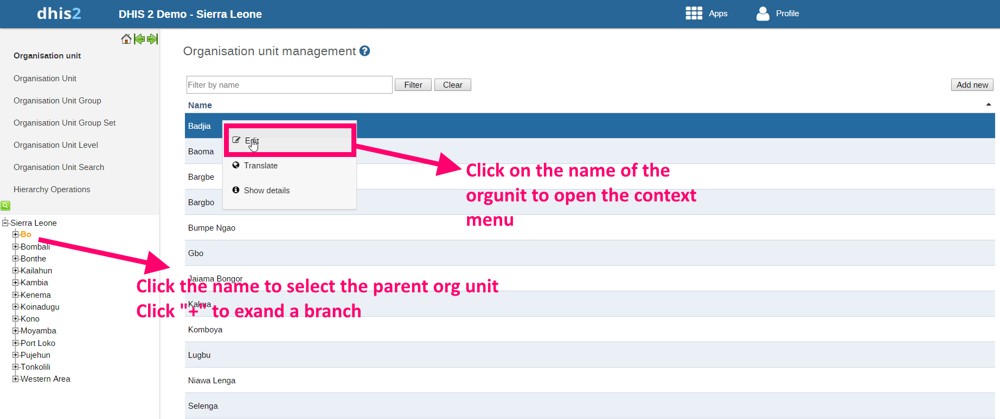

This is where you can create organisation units (from now on referred to as organisation units) and build up the organisation unit hierarchy. Organisation units are added one by one as either root unit or a child of a selected unit. The left side menu represents the current organisational hierarchy and if you select a unit there you will see its children listed in the main list of organisation units in the middle of the screen. When an organisation unit is selected in the left side menu you can also add new child units to it. To locate an organisation unit in the hierarchy you can either navigate through the tree by expanding the branches (click on the + symbol), or search for it by opening the search field (click the green symbol above the root of the hierarchy). In search you can either search for the organisation unit name or its code, both will only show exact matches (case-insensitive). To add a new organisation unit first select its parent and then click on the Add new button in the top right corner of the list of organisation units. To add a new root organisation unit make sure no organisation unit is selected in the menu and click on "Add new". The details of adding a new organisation unit are explained in ???.
To edit the properties of an existing organisation unit first select its parent (if any) in the left side menu, then locate the organisation unit in the listed organisation units, and click on the name of the organisation unit that you want to modify. A context menu will appear, and you should select "Edit". Refer to the screen-shot below to see how it works.
|  |
The following properties can be defined in the Edit (or Create new) window:
Name: Define the precise name of the organisation unit in this field. Each organisation unit must have a unique name.
Short name: Typically, an abbreviation of the full name. This attribute is often used in reports to display the name of the organisation unit, where there is limited space available.
Code: In many countries, organisation units are assigned a code. This code can be entered in this field.
Description: A description can be a longer piece of text which can be used to describe the organisationunit.
Opening date: Used to control which organisation units that where existing at a point in time, e.g. when analysing historical data. This attribute is required. The default date for opening of organisation units is 1900-01-01, but can be set to any date (even dates which occur in the future).
Registers data: This property is used to identify which organisation units that can register data or not. Sometimes administrative organisation units at higher levels in the hierarchy are not supposed to register any data. This can help control the data entry process as only organisation units with this property set to Yes will be available for data entry.
Comment: Any additional information that you would like to add can be put here.
Coordinates: This field is used to create the maps in the GIS module. Paste in the coordinates of the organisation unit in this field, either a polygon (for organisation units that represent an administrative boundary) or a point (for health facilities). Without this information the GIS module will not work. It might be more efficient to import these coordinates later as a batch job for all organisation units using the import module. See the GIS chapter for more details.
URL: You can use this field to insert a URL link to an external web site that has additional information about this specific organisation unit.
Contact information: A contact person, address, email, and phone number can be entered in these fields. This information can be vital for facilitating follow-up.
Datasets: Datasets can be assigned to organisational units here. See the chapter on "Data sets" for more detailed information on assigning datasets to organisational units.
Organisation unit groups: Assignments to organisational units group sets can be assigned through the individual drop-down boxes which appear for each group set.
In addition to all of the options listed above, if you have added any attributes to organisation units, your custom attributes may also appear there. Please refer to the section on "Attributes" for more information about how attributes can be used.